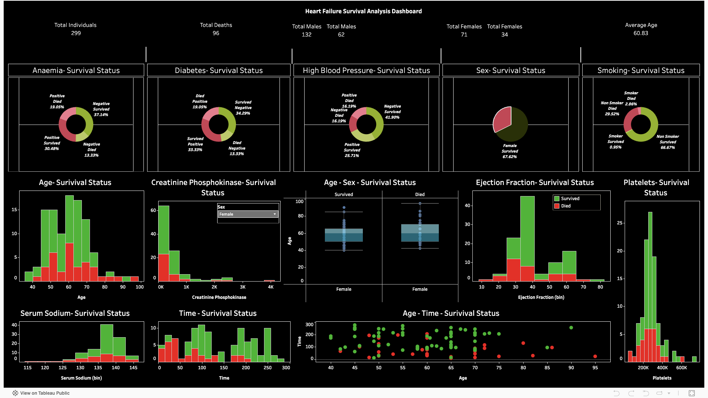

Tools I Use
Tools & Skills
 Python
Python MySQL
MySQL pgAdmin
pgAdmin Tableau
Tableau Power BI
Power BI Excel
ExcelPortfolio
Optimizing clinical operations and translating complex data into actionable insights.
Specialization
I'm a senior at Rutgers University majoring in Management Information Systems, graduating in May 2026 with a focus on healthcare analytics and business intelligence. My work involves identifying key biomarkers, improving patient throughput in emergency settings, and analyzing large-scale healthcare financial datasets. I work with tools like Python, SQL, Tableau, and Excel to clean, analyze, and visualize data in ways that drive real decisions and provide valuable insights.
I'm passionate about finding the story behind the numbers and translating complex data into clear, actionable insights. I am currently learning and leveraging AI-driven analytics to uncover deeper patterns and extract more sophisticated insights in data. Outside of analytics, I enjoy pickleball, Fashion market trends, and fantasy sports analytics.
Tools I Use
PythonMySQLpgAdminTableauPower BIExcelClinical & Operational Insights

Operational Analytics
Analyzed 9,216 patient visits to identify bottlenecks in wait times and correlations with satisfaction scores. Developed heatmaps to visualize peak hourly throughput for staffing optimization.

Clinical Analytics
Visualized biomarkers across 299 clinical cases to identify survival predictors. Analyzed ejection fraction and serum sodium levels to define patient risk profiles and recovery indicators.

Financial Analytics
Synthesized 55,500 patient records representing $1.42bn in revenue. Built a Power BI dashboard tracking YoY admission trends and identifying key revenue drivers across providers.
Get In Touch
Interested in discussing a project or opportunity? Hope to hear from you !
Tyresedieudonne1@gmail.com
Send Me an Email